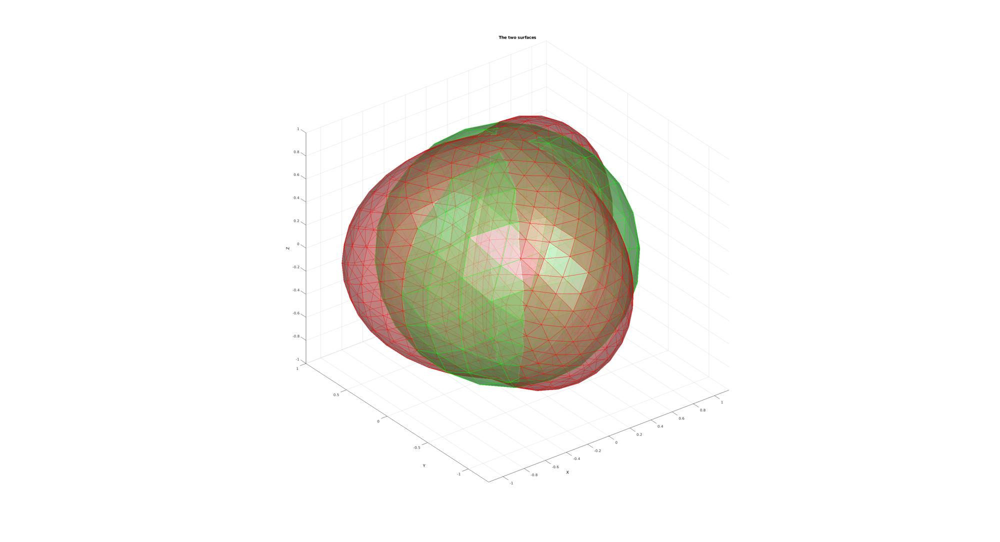
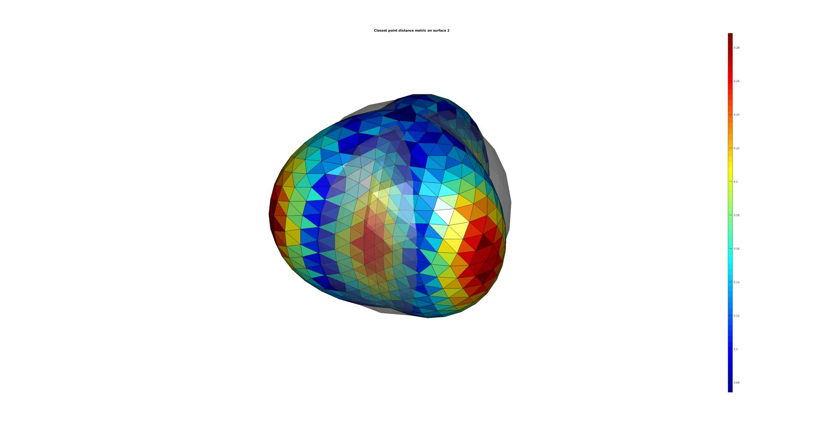
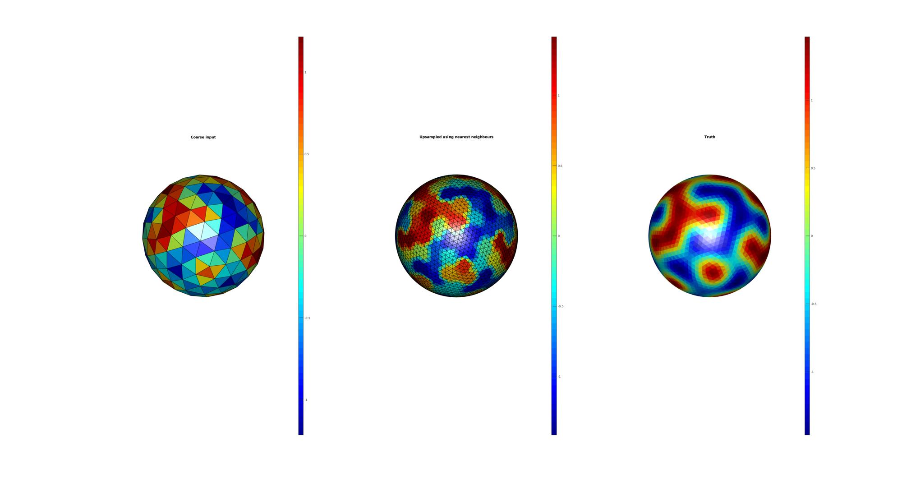

minDist
Below is a demonstration of the features of the minDist function
Contents
clear; close all; clc;
PLOT SETTINGS
figColor='w'; figColorDef='white'; fontSize=10; cmap=gray(250); faceAlpha1=0.5; faceAlpha2=1;
EXAMPLE FOR POINT CLOUD OR SURFACE DISTANCE COMPUTATION
Building test surfaces
%Defining shape 1 as a sphere [F1,V1,~]=geoSphere(2,1); %Defining shape 2 as a deformed sphere [F2,V2,Vs]=geoSphere(3,1); freqDef=3; ampDef=0.25; ampDefDiff=0.25; n1=Vs(:,3)+(ampDef-ampDefDiff)+ampDef*sin(freqDef*Vs(:,1)); [V2(:,1),V2(:,2),~]=sph2cart(Vs(:,1),Vs(:,2),n1);
Plotting surfaces
hf1=figuremax(figColor,figColorDef); title('The two surfaces','FontSize',fontSize); xlabel('X','FontSize',fontSize);ylabel('Y','FontSize',fontSize);zlabel('Z','FontSize',fontSize); hold on; gpatch(F1,V1,'gw','g',faceAlpha1); gpatch(F2,V2,'rw','r',faceAlpha1); axis equal; view(3); axis tight; grid on; set(gca,'FontSize',fontSize); camlight headlight; drawnow;
Get closest point based distance metric
D2=minDist(V2,V1);
On this type of use see also the triSurfSetDist function
Plotting results
[CF]=vertexToFaceMeasure(F2,D2); hf2=figuremax(figColor,figColorDef); title('Closest point distance metric on surface 2','FontSize',fontSize); xlabel('X','FontSize',fontSize);ylabel('Y','FontSize',fontSize);zlabel('Z','FontSize',fontSize); hold on; patch('faces',F2,'vertices',V2,'FaceColor','flat','CData',CF); patch('faces',F1,'vertices',V1,'FaceColor',0.5.*ones(1,3),'FaceAlpha',faceAlpha1,'EdgeColor','None'); colormap jet; colorbar; axis equal; view(3); axis tight; axis off; set(gca,'FontSize',fontSize); camlight headlight; drawnow;
EXAMPLE FOR NEAREST NEIGHBOUR SEARCH AND INTERPOLATION
Building test surfaces
%Defining shape 1 as a sphere [F1,V1,~]=geoSphere(2,1); %Defining shape 2 as a denser sphere [F2,V2,Vs]=geoSphere(4,1); %Simulate some kind of result on the coarse sphere C1=triplyPeriodicMinimal(6.*V1,'g');
Find nearest neighbours
[~,indMin]=minDist(V2,V1);
Interpolation now reduces to simple indexing into the array
C2=C1(indMin);
Get "true" color to compare
C2_true=triplyPeriodicMinimal(6.*V2,'g');
Plotting surfaces
[CF1]=vertexToFaceMeasure(F1,C1); [CF2]=vertexToFaceMeasure(F2,C2); [CF2_true]=vertexToFaceMeasure(F2,C2_true); hf2=figuremax(figColor,figColorDef); subplot(1,3,1); title('Coarse input','FontSize',fontSize); xlabel('X','FontSize',fontSize);ylabel('Y','FontSize',fontSize);zlabel('Z','FontSize',fontSize); hold on; patch('faces',F1,'vertices',V1,'FaceColor','flat','CData',CF1,'FaceAlpha',faceAlpha2,'EdgeColor','k'); colormap jet; colorbar; axis equal; view(3); axis tight; axis off; set(gca,'FontSize',fontSize); camlight headlight; subplot(1,3,2); title('Upsampled using nearest neighbours','FontSize',fontSize); xlabel('X','FontSize',fontSize);ylabel('Y','FontSize',fontSize);zlabel('Z','FontSize',fontSize); hold on; patch('faces',F2,'vertices',V2,'FaceColor','flat','CData',CF2,'FaceAlpha',faceAlpha2,'EdgeColor','k'); colormap jet; colorbar; axis equal; view(3); axis tight; axis off; set(gca,'FontSize',fontSize); camlight headlight; subplot(1,3,3); title('Truth','FontSize',fontSize); xlabel('X','FontSize',fontSize);ylabel('Y','FontSize',fontSize);zlabel('Z','FontSize',fontSize); hold on; patch('faces',F2,'vertices',V2,'FaceColor','flat','CData',CF2_true,'FaceAlpha',faceAlpha2,'EdgeColor','none'); colormap jet; colorbar; axis equal; view(3); axis tight; axis off; set(gca,'FontSize',fontSize); camlight headlight; drawnow;

GIBBON www.gibboncode.org
Kevin Mattheus Moerman, gibbon.toolbox@gmail.com
GIBBON footer text
License: https://github.com/gibbonCode/GIBBON/blob/master/LICENSE
GIBBON: The Geometry and Image-based Bioengineering add-On. A toolbox for image segmentation, image-based modeling, meshing, and finite element analysis.
Copyright (C) 2019 Kevin Mattheus Moerman
This program is free software: you can redistribute it and/or modify it under the terms of the GNU General Public License as published by the Free Software Foundation, either version 3 of the License, or (at your option) any later version.
This program is distributed in the hope that it will be useful, but WITHOUT ANY WARRANTY; without even the implied warranty of MERCHANTABILITY or FITNESS FOR A PARTICULAR PURPOSE. See the GNU General Public License for more details.
You should have received a copy of the GNU General Public License along with this program. If not, see http://www.gnu.org/licenses/.